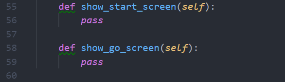

This is the first lesson of our tutorial series on programming games with Pygame. In this lesson we will modify the pygame template that we created in the first lesson for a cleaner outlook. The game that we will create with Pygame will also be introduced. These tutorials are intended for users who are completely new to the Pygame library and are looking for a quick and easy way to get started. Intermediate Python skills are required.
A video version of this tutorial can be seen here:
In the last lesson, we covered the basics of pygame by creating a skeleton for any pygame project. The problem with this model, however, is that it can lead to incredibly messy code once your project begins to get more complex. To improve organization within our code, we can use a feature in python known as modules. Modules are a way to store pieces of Python code in different files to improve readability.This means that we can create multiple files for one game, with each file fulfilling it's own unique purpose.
To begin creating our new pygame template, we will need to create three files. We'll name the first file "main.py", the second file "settings.py" and the third file "sprites.py" (we may change the third file later - once things get even more messy!). Bear in mind that the items within the quotes represent the file name.
We will start by working on the main file first. It is in this file where most of the game's elements will be located (the game loop, input processing, drawing/rendering and updating). To begin we will first import the pygame and random libraries (as we did last time). For the sake of simplicity, we will make it so that we can access pygame by typing pg, rather than typing "pygame" all of the time. To do this we will type "import pygame as pg". After importing the random libraries, we will utilize our modules through the following syntax: "from (file name) import *". Your "main.py" file should now look like this:
After importing, we can begin re-creating our pygame template. The first thing that we will do is create a class labelled "Main" (illustrates that this is the class responsible for our game), and we will create a constructor for this class through the use of the __init__() method. Inside the constructor, we will initialize pygame, the pygame mixer and our game window.
But wait! We haven't yet defined WIDTH, HEIGHT and TITLE. This is where our modules come in handy. WIDTH, HEIGHT and TITLE are settings for the game window, which means that it makes since to store their values their. We will define WIDTH, HEIGHT and TITLE in our "settings.py" file:
While we are defining our screen settings in the "settings.py" file, we may as well define our colors as well:
For our purposes (creating a new pygame template), this should be all the code we need in our "settings.py". Let's head back to our "main.py" file and begin creating our game. Inside our "Main" class, we will have 7 methods (excluding the constructor). The first method will be "new()", in which we will create a new game. In the "new()" method we will create a "sprite group" that we will later use to show our sprites onto the screen. To do this we will type "self.all_sprites = pg.sprite.Group()" inside the new method. While we're at it, we'll create run(), update(), events() and draw() methods. In the "new()" method we will also call the run() method.
In our "run()" method, we will create a "self.playing" variable to create a game loop, in which we will call the update(), events() and draw() methods. We will also set the FPS of our game within the loop. The order of the methods does not matter, except for the draw method (which should be last because of pg.display.flip()).
Now we will fill in the remaining methods with the remaining code that we used in our original template. We will also utilize the "all_sprites" group that we created for updating and drawing:
Below our "Main" class, we need to create an instance of this class to make our game work. To do this we'll create another method called game(). We'll call this method if we are running the "main.py" file and it will create an instance of our "Main" class called "g":
Since we want our game to look as professional as possible, we will also include a start screen and a game over screen. However, since this is just a template, we will only create empty methods for these two elements. That way, when we're ready to work on our start and game over screens, we won't have to refactor as much code:
After creating these two methods, we can finish our "game" method. We will add the following code:
Finally, after correcting all of those annoying pyLint errors that kept popping up (the wildcard (*) was removed as it's use is discouraged), we get this:
The code can be found on Github here:
For our tutorial series, we will focus on creating a game based on DC's most popular characters, the Justice League! For the sake of simplicity, we will only use 4 leaguers, with each possessing their own unique ability for use in the game. We will use Flash for his incredible speed, Green Lantern for his ability to move heavy objects with his ring, Batman, because he's Batman, and Aquaman, for his underwater capabilities. The game will be based on the online flash platformer game "Tag Team Titans". The reason we decided to use this game as a benchmark is because it will allow our game to utilize several of pygame's complex features. We'll work with gravity, forces, collisions, power-ups, different character-abilities, and multiple levels!
A demo of "Tag Team Titans" can be seen below (all credits go to Lagged):